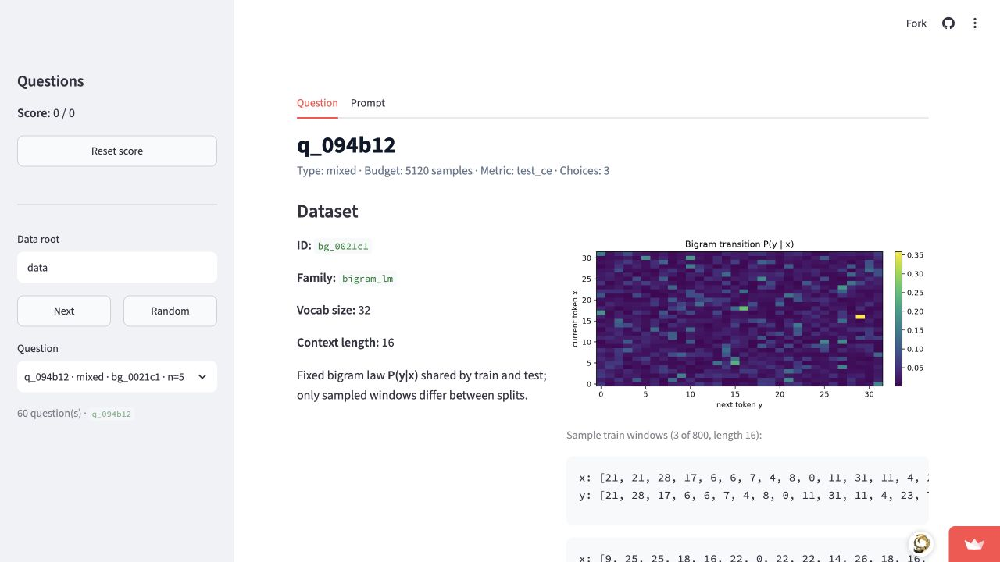
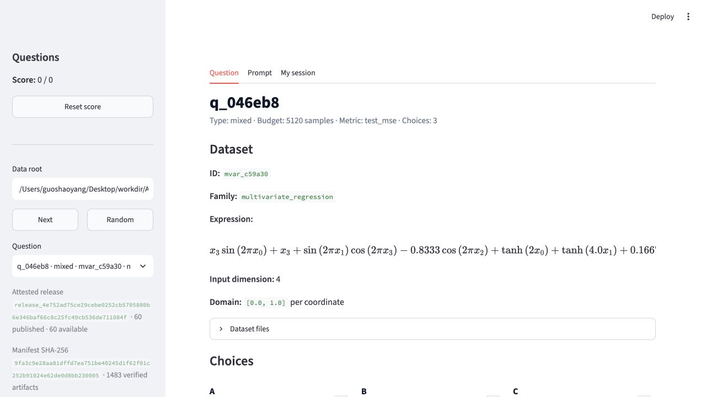
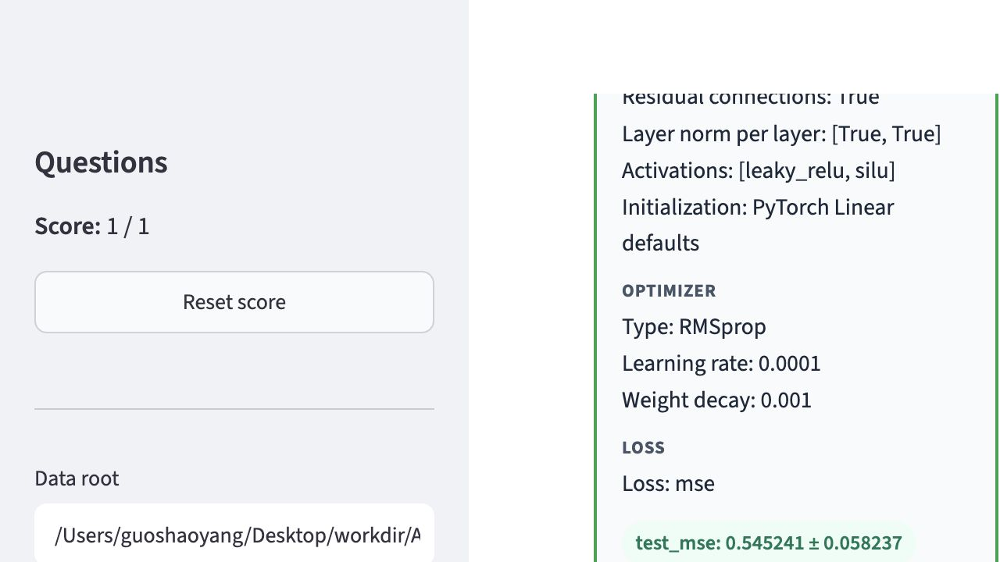
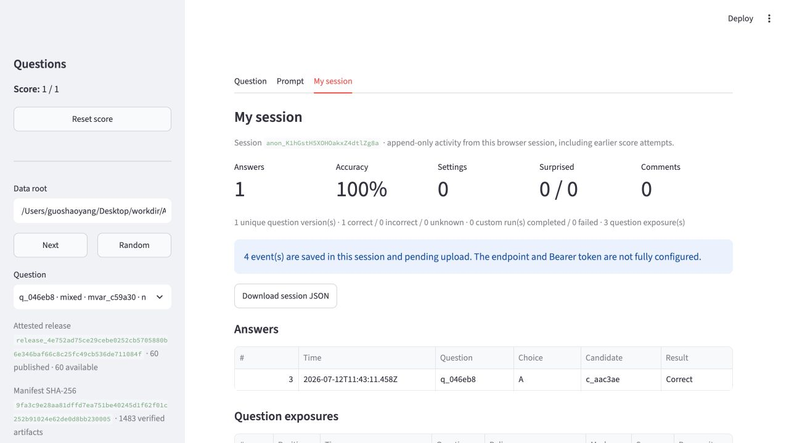

spec → code → run → GT 主不变量与发布校验。
Architecture intelligence benchmark
ArchitectureIQ 开发与 Benchmark 总览
给定同一数据集与若干完整训练配置，让模型或人类判断哪一个会在规定预算下取得最佳测试指标。项目已经具备可信出题流水线、较大的本地题库和新版答题产品；当前工作的重心，是把它们整理成可发布、可审计、可同时评测人类与 agent 的正式 benchmark。
先分清两个事实范围
本地
data/ 有 261 道有效题；当前受版本控制并通过 manifest 证明的发布包只有 60 道。线上匿名页面仍是旧版 60 题 Inspector，本地新 UI、回流、惊讶反馈、推荐和 Reports 尚未完成 hosted 验收。
261
本地有效题
227 干净 + 34 label-noise
60
Attested 发布题
3 family × 20，当前公共口径
853
候选 GT summary
来自实际执行生成代码
27
本地数据实例
20 个实例贡献有效题
新版 Inspector、session、reaction、推荐与 Reports 闭环。
261 题策展发布、Cloud revision、Supabase 与真实回流验收。
隔离评测 runner、私有 held-out release 与人类研究协议。
01 / System contract
架构与可信性
ArchitectureIQ 的价值不只在题目形式，而在题面代码与 Ground Truth 使用同一条执行路径。任何新 family、前端实验或 agent 工具都不能绕开这条合同。
冻结 Spec
dataset_spec.json 与 candidate_spec.json 内容寻址，记录数据、模型、优化器、损失与预算。
渲染代码
生成 synthesize.py、model.py、loss.py、optimizer.py、train.py。
导入并执行
由 runtime loader 执行磁盘上的生成代码；不允许 GT runner 维护另一套训练或合成逻辑。
存储与出题
从 summary.json / curves.npz 选 winner，再从同一份磁盘代码摘录题面。
公平比较合同
- 同题 choices 使用同一 materialized dataset。
- 每个 choice 显式声明
total_samples_seen。 - 按 family 的 selection metric 排名。
- 题面不包含 final metrics、曲线或 seed 统计。
- failed seed 候选不得进入有效题。
发布证明
当前 bundle 为 release_4e752ad75ce29cebe0252cb5705880b6e346baf66c8c25fc49cb536de711084f，manifest SHA-256 为 9fa3c9e28aa81dffd7ea751be40245d1f62f01c252b91024e62de0d8bb230005，共验证 1483 个 artifact。
目前的追溯缺口
release 已可在本地证明，但尚未绑定一个干净 source commit、真实 provider deploy ID、hosted PostgreSQL acceptance 与线上 roundtrip evidence。页面题数不能替代 source mapping。
实现原则
所有需要训练或比较自定义配置的功能，都应先写临时 candidate、调用 run_ground_truth()，再读结果并清理临时目录。Inspector、评测 harness 和未来 sandbox 不能复制一套“近似 GT”。
02 / Question program
本地题库与出题计划
本地题库已经从原始 60 题扩展为 261 道有效题，重点增加了大预算与 label-noise 机制。下一阶段不是盲目增量，而是策展、去捷径、confirmation 与 family 扩展。
按题型
按 dataset family
227 / 34干净题 / label-noise 题
130 / 261击败当前启发式集成
54% / 46%代表性盲 solver：干净 / 噪声
| 批次 | 产物 | 得到的证据 | 仍需处理 |
|---|---|---|---|
| 旧 60 题主集 | 3 family × 20，当前公共评测口径 | 端到端 pipeline 与多种 GPT protocol 已能运行 | “最大参数量”命中 66.7%，容量捷径过强；只适合作为公开 practice / 历史对照 |
| 大预算清洁批次 | 226 candidates，222 ok，42 新题 | 综合 capacity shortcut 降至约 24%；architecture-only 质量最好 | 易 target 在大预算下顶部打平；optimizer distractor 仍偏明显 |
| Label-noise 批次 | 254 candidates，34 新题 | 出现 double descent、SGD/Adagrad 胜 Adam、正则化改善等反直觉机制 | loss-only gap 仍未过阈；一元 target 太容易 |
| 本地全量 | 261 题，27 instances，约 207 MB | 覆盖 95 architecture / 133 mixed / 33 optimizer | 尚未形成 canonical 新 release，也未与 sealed split 做 instance/candidate 去重 |
发布前固定质量门
- GT 必须来自 generated code，且所有 seeds 完整成功。
- 按参数量、深度、宽度、固定 Adam 等 shortcut 逐项评分。
- 单轴题确认 optimizer / loss / batch size / budget 真正不变。
- 每个实例进入正式评测的题数受限，避免固定 test split 过拟合。
- 用独立 confirmation seeds 或 confirmation data 复核 winner。
- 检查字母、family、type、budget 和 winner 分布。
- 通过 publisher smoke、manifest 重算与人工 prompt 泄漏复查。
必须先修的题目问题
- loss-only：使用更高维 target、0.3–0.5 noise 或 contaminated regression，扩大 MSE / Huber / MAE / regularization 差异。
- 跨预算：验证
_budget_field与choices_compatible，避免 schedule 差异被误标成单轴。 - optimizer：加入调坏的 Adam 与调好的 SGD/Adagrad，消除类型捷径。
- 复用泄漏：正式 split 按 dataset instance 与 candidate ID 去重；顺序学习实验另设有意复用池。
Family 扩展顺序
spectral_regression
ReLU MLP、SIREN、Fourier-feature MLP；测 spectral bias。最容易复用现有 regression pipeline。
structured_memory_lm
TCN、GRU、local/global attention；测 receptive field、记忆与有限预算样本效率。
结构家族
translated_motifs、anova_interaction、set_relations，分别测 locality、交互结构与置换不变性。
03 / Product surface
前端、回流与部署
答题产品的核心本地闭环已明显领先线上。当前首要工程任务不是继续堆 UI，而是把现有实现形成干净、可追溯的 release 并完成 hosted acceptance。


| 能力 | 本地工作树 | 匿名线上页面 | 正式验收条件 |
|---|---|---|---|
| 题目浏览 / 作答 / reveal | 可用 | 可用 | 线上抽题与正确答案匹配 attested runtime release |
| Release attestation | 1483 artifacts | 未显示 | 线上显示完整 release、manifest SHA、artifact count、runtime checkout SHA |
| My session / 下载 / 恢复 | 本地完成 | 未发现 | 刷新、下载、恢复、分批重试与 quarantine 实际浏览器通过 |
| Comment / session upload | 本地完成 | 未发现 | 真实 Edge + Supabase roundtrip，duplicate 幂等、conflict 409、RLS/grant 通过 |
| Surprise reaction | 本地完成 | 未发现 | 只能 reveal 后提交；true/false、重放、冲突及权威统计通过 |
| Surprise-aware Next | 本地完成 | 未发现 | 只从 attested release 选题，记录 policy / decision / propensity，失败回退顺序 Next |
| Internal Reports | mock 验证 | 未部署 | 私有访问控制、六业务页原子 snapshot、CSV、quality 与 hosted DB 证据 |


上线顺序是一个完整事务
先冻结并提交 bundle + manifest + registry，再按既定 migration 顺序部署 receiver / Reports / reaction schema，随后部署同一 source commit 的 Streamlit revision，最后保存 provider mapping、PostgreSQL acceptance 与 hosted roundtrip evidence。缺少任何一项，都只能标记为“本地完成”或“线上未验”。
04 / Evaluation science
模型 Benchmark 计划
正式 benchmark 不应只报“模型名 + 正确率”。一个实验的真正定义，是模型看到了哪些题、哪些文件、能用什么工具、何时得到何种反馈，以及是否始终是同一个 agent。
纯推理
测 architecture intuition。无 shell、无代码执行、无答案、无反馈；分单题与整套上下文。
受控实验
给隔离 sandbox 和固定资源预算，允许写代码、做 probe 或近似训练；完整保存工具轨迹。
Agentic 调查
允许规划、多步检索和子任务，但精确记录数据边界、网络、文档和子 agent；不得接触隐藏 GT。
反馈学习
同一个 agent 顺序作答并在每题后得到预定义反馈，测经验积累、记忆与 context compaction。
| ID / 目的 | 每次调用的上下文 | 工具与可见文件 | 反馈与 agent 连续性 | 主报告口径 |
|---|---|---|---|---|
| R1 单题盲答 最低上下文 baseline |
每题启动 fresh agent；只给当前一份 sanitized prompt，不给其他题或全局摘要。 | 无 shell、无 Python、无网络；不可见仓库、答案、summary.json、曲线、历史回答。 |
无反馈；每题上下文重置。不得以并发 worker 共享缓存或 lesson。 | 每模型至少 6 个独立 replicate；60 题则为 360 个独立 item-call。报告 mean、CI、family/type 分层。 |
| R2 整套盲答 横向比较能力 |
一个 fresh agent 一次看到完整、去答案、固定顺序或声明随机顺序的 question set；一次输出全部答案。 | 与 R1 相同，无工具；允许在可见题目之间比较重复 candidate 与配置模式。 | 无反馈；一个 agent context 完成整套。不得把中途 continuation 换成新 agent。 | 与 R1 使用同一 release 和题集；至少 6 个独立 agent run，另报多数投票但不替代 run 均值。 |
| R3 顺序无反馈 隔离 context 长度效应 |
同一 agent 每次只收到下一题，但保留之前题面与自己的回答；最终才评分。 | 无工具、无 GT；不提供正确字母、metrics 或 lesson。 | 全程同一 agent/thread；允许平台原生 compaction，但必须记录 compaction 与 token 使用。 | 与 R2 对比可区分“一次看到全套”与“长上下文逐题输入”，不把它叫在线学习。 |
| L1 顺序答案反馈 最小在线学习 |
同一 agent 每次只看当前题；提交预测后才获得当前题的正确 choice / candidate ID。 | 无工具；反馈不含完整 metrics、曲线或未来题信息。 | 题 1→N 始终同一 agent ID。自动 compaction 可用；不允许由 continuation agent 读 lesson 文件代替隐式上下文。 | 至少 6 个 run；画 position curve，并按“全新 candidate / 历史 candidate / winner 见过”分层。 |
| L2 顺序指标反馈 机制学习 |
与 L1 相同，但预测后揭示预先固定的反馈包：winner、完整 ranking、selection metric；是否给数值必须版本化。 | 默认无工具；不能读取下一题。agent 可自行总结，不强制 lesson 格式。 | 同一 agent 连续完成；反馈包 SHA 写入 manifest，避免不同 run 得到不同信息。 | 分离 answer-only 与 metric-rich 效果；报告增量，不与 R1 混为同一“模型能力”。 |
| L3 10 题 block 局部适应与重置 |
每连续 10 题一个 fresh agent；组内题后反馈，组间完全重置；每组只看自己的 10 题。 | 按 L1 或 L2 的明确子版本执行，默认无工具。 | 组内同一 agent，组间不同 agent。不能把 6 组总分直接解释为“反馈让模型变好/变差”。 | 报告每组前 5 / 后 5、组内 position 与组间方差；作为诊断，不作为主模型排行榜。 |
| E1 Sandbox 实验 科学实验能力 |
每题 fresh agent，给 prompt 与空白隔离工作区；可在资源上限内编写 probe、重建近似数据或运行候选。 | 允许 shell / Python；禁止挂载仓库、release artifact、答案、GT、历史 attempt。明确 CPU 时间、内存、磁盘、进程和网络策略。 | 无正确答案反馈。所有命令、生成文件、stdout/stderr、wall time 与最终 rationale 归档。 | 准确率 + 成本 + 实验有效率；另标 exact reconstruction、近似 probe、纯推理三类行为。 |
| A1 Agentic 调查 开放式研究能力 |
一个 agent 可规划、多轮调查、调用受控 subagents；问题上下文可单题或整套，但必须分别编号。 | 工具白名单、网络域名、公开文档与子 agent 数量固定；任何网页/文件来源写入 trace。隐藏 release 和 GT 永远不可见。 | 可设无反馈或顺序反馈版本；主 agent 身份保持，subagent 输出全部归档。 | 准确率、时间、token/compute、tool calls、可复核证据与违规率；不与 tool-free leaderboard 混排。 |
严格禁止的“实验”
读取仓库中的 question.json.correct_letter、candidate results/summary.json、curves.npz、评分脚本输出或先前 agent 答案，不属于 sandbox research，而是答案泄漏。允许做实验时，runner 必须从零创建隔离目录并记录文件清单；不能只靠 prompt 里一句“请勿偷看”。
每个 run 必须保存的 Context Ledger
身份与输入
- benchmark / release / protocol ID 与版本
- 模型精确名称、effort、provider revision
- agent / thread / turn ID 与 parent-child 关系
- 题目 IDs、顺序、prompt SHA、sanitizer SHA
权限与过程
- 可见文件 inventory 与 mount mode
- shell / Python / network / subagent 权限
- 反馈时点、字段与 feedback SHA
- compaction、continuation、重试和异常
结果与成本
- raw response、解析后答案与 confidence
- tool trace、生成文件与 forbidden-access audit
- token、wall time、CPU / GPU / memory
- 评分器版本、CI、paired test 与排除原因
Split 与污染治理
- Practice：公开题面和答案，供人类练习、UI 调试与 agent protocol 开发。
- Public live：题面公开、答案按产品规则 reveal；所有模型分数标记为 public-set，不能声称未污染。
- Sealed evaluation：dataset instance、candidate、答案与 release 私有；受控 runner 执行，退休后才公开。
- 默认在 split 间按 dataset instance 与 candidate ID 去重；生成 seed 与 confirmation seed 分离。
- 顺序学习另建明确 overlap 设计，按 winner-seen / candidate-seen / all-new 分层，而不是把记忆查表冒充抽象学习。
统计报告合同
- Top-1 accuracy、bootstrap 95% CI、family/type/noise/budget 分层。
- 记录 confidence 时报告 Brier score、ECE 与选择性准确率。
- 顺序协议画逐题与滚动曲线，同时报告前后段和 overlap strata。
- 模型比较使用相同题序的 paired analysis；run 为独立单位，不把 60 题伪装成 60 个独立模型样本。
- 多模型、多 setting 比较标注 multiplicity；非显著差异不得写成模型优劣。
- 协议、release 或工具边界不同的结果分表展示，不汇成单一排行榜。
已完成的公平连续评测
78.3%GPT-5.4 high，6 个同-agent run
79.7%GPT-5.5 high，6 个同-agent run
78.3%GPT-5.6-SOL high，6 个同-agent run
当前结论
三者在严格同-agent、同 CLI、同 60 题顺序反馈协议下没有显著差异。5.5 vs 5.4 的精确置换 p=0.500，5.5 vs 5.6 为 p=0.530，5.4 vs 5.6 为 p=1.000。反馈后的高分同时包含规则修正与 candidate/metric 记忆，因此正式新 benchmark 必须报告 overlap strata。完整协议、run 记录和回答预览见 GPT 评测报告。
05 / Human benchmark
开放给人类做题
人类评测既是 baseline，也是题目有效性与产品体验的质量信号。必须把自然使用、无反馈直觉和工具辅助三种条件分开，不能用网站里混合产生的数据直接做单一“人类准确率”。
Blind batch
参与者完成一个固定 batch 后统一 reveal；测无反馈直觉。题序随机化，记录 confidence 与时间，不允许修改已提交答案。
Natural feedback
每题提交后立即 reveal 与 reaction，下一题可利用经验；测真实产品使用与学习曲线。记录曝光和 propensity。
Tool-assisted
允许草稿、代码或受控 sandbox；记录工具类型和耗时。与 H1/H2 分榜，用于比较人类科学调查与 agentic investigation。
每次答题采集
- release、question version、session、attempt 与 presentation identity。
- choice、是否正确、confidence、提交前耗时与可选修改次数。
- reveal 后独立 surprise reaction；可选 comment 与 proposed setting。
- policy、decision、source、position 与 selection propensity。
- 可选背景：ML 经验区间、主要领域、是否熟悉该类 family；不采集不必要的个人信息。
隐私与研究边界
- 内部 pilot 使用简短明确的 participation notice；参与自愿，可下载本地足迹并选择是否上传。
- 默认匿名随机 session ID；不上传 secrets、本地路径、代码、异常堆栈或自由文本之外的设备细节。
- comment 可能含个人信息，单独提示并支持不填；维护者 Reports 使用私有访问控制。
- 公开论文或 leaderboard 前冻结排除标准、最小样本、分析脚本与版本。
| 阶段 | 样本目标 | 主指标 | 完成标准 |
|---|---|---|---|
| 内部可用性 pilot | 10–15 名参与者，每人 10–20 题 | 完成率、提交耗时、错误/恢复、主观反馈 | 没有答案提前泄漏；session 下载/上传稳定；事件守恒 |
| 题目校准 pilot | 每题至少 30 个有效 exposure，覆盖不同经验层级 | 准确率、confidence calibration、反应时、surprise rate | 识别歧义题、过易题、shortcut 与异常耗时；形成 item report |
| 正式 human baseline | 预注册样本量；H1/H2/H3 分层招募 | 准确率与 CI、Brier/ECE、学习曲线、expertise interaction | 固定 release/protocol，报告缺失与排除，原始匿名事件可审计 |
结果 reveal 是实验变量
当前产品会在每题提交后揭晓答案，这天然属于 H2 顺序反馈条件。要得到 H1 人类盲答 baseline，前端必须增加“batch 完成后统一揭晓”模式；不能把已有自然 session 数据事后改名为 blind。
06 / Readiness audit
现在各方面做到哪里
以下状态区分代码存在、通过本地检查、进入受证明 release、真实线上可见四个层级。只有最后一层才能称为“已上线”。
| 工作流 | 状态 | 现有证据 | 下一道验收门 |
|---|---|---|---|
| Spec → code → run → GT | 已验证 | dataset 与 candidate 均执行生成代码；sync 后渲染题面 | 新增 family 继续走相同 plugin / renderer / runtime 合同 |
| 题目有效性与失败排除 | 已验证 | 10-seed GT、gap / win-rate / non-overlap；failed seeds 排除 | 加入独立 confirmation seeds/data 与 formal item audit |
| 本地 261 题资产 | 本地完成 | 261 question JSON，853 summaries，27 instances，约 207 MB | 去重、策展、split、publisher smoke、manifest 与 registry |
| 当前 60 题 bundle | 本地证明 | release ID、manifest SHA、1483 artifact hash 均可复算 | 绑定 clean source commit 与真实 provider deploy evidence |
| 新版答题 Inspector | 本地完成 | 实际浏览器完成作答、reveal、reaction、Next、My session | 部署后在匿名/授权两种真实浏览器复验 |
| Feedback receiver / Supabase | 线上未验 | schema、Edge、client、preflight 与本地测试齐全 | 真实 PostgreSQL migration、ACL/RLS、duplicate/conflict roundtrip |
| Reports | 本地 mock | Summary、Answers、Proposals、Ingestion、Quality、Surprise 页面 | 私有 hosted app、原子 snapshot 与真实数据 acceptance |
| 模型评测记录 | 一组完成 | 60 题多 setting；三模型各 6 个严格 same-agent sequential run | 协议 manifest 化，迁移到 sealed 新 release，补 R3/E1/A1 |
| 人类 benchmark | 计划完成 | 事件模型与本页 H1/H2/H3 协议已定义 | 实现 blind-batch UI、参与 notice、pilot 与 item calibration |
本轮验证快照
共验证 1078 个不同测试：受限沙箱内 1067 passed，另有 11 个 Reports 测试仅因禁止绑定本机临时端口而无法 setup；允许 loopback 后复跑对应文件为 12 passed。此外，README 的 HTML parser、内联 JavaScript、12 个本地链接/图片资源和 git diff --check 均通过。
最高风险：发布边界
261 本地题不能直接被线上推荐或公开 benchmark 使用。必须从 canonical pipeline 选择、发布并创建新 release；不能复制单个 question.json。
最高方法风险：记忆
现有 60 题共享 candidate。顺序反馈高分同时测到精确 candidate 记忆。新主榜应 instance-disjoint；学习榜单单独、显式控制 overlap。
最高运营风险：来源映射
当前工作树包含大量并行开发变更。未形成 clean deploy commit 前，不应把本地测试或截图描述成某个已部署 revision。
07 / Delivery roadmap
从本地原型到正式 Benchmark
路线图按依赖关系排序。P0 先解决事实身份、协议和线上闭环；P1 扩充人类数据与题型；P2 才做公开 leaderboard 与个性化实验。
P0.1 冻结 Benchmark Protocol v1 下一步
把 R1/R2/R3/L1/L2/L3/E1/A1 写成机器可读 protocol manifest；实现 context ledger、同-agent 检查、forbidden-file audit 与统一 scorer。
验收：任一结果可从 manifest + raw trace 重放评分；agent 更换、缺失反馈 SHA 或越权文件访问会 fail closed。
P0.2 策展并冻结题库 split 下一步
审计 261 题，按 practice / public live / sealed evaluation 分配；跨 split 做 dataset instance、candidate、target seed 去重，使用 confirmation GT。
验收：每个 split 有独立 release manifest、item card、shortcut report、答案分布与去重报告；sealed key 不进入公开仓库。
P0.3 发布新版产品与后端 待部署
形成干净 source commit；部署 migration、Edge、Reports 与 Inspector；完成 release/source/provider/Postgres/roundtrip 五方证据链。
验收：线上显示 attestation；真实 answer/comment/reaction/presentation 可上传并在私有 Reports 权威查询；错误与冲突语义符合合同。
P1.1 人类 pilot 与题目校准 计划中
实现 blind-batch 模式与 participation notice，先做可用性 pilot，再收集每题足够 exposure，输出 item difficulty、calibration、reaction 和耗时报告。
验收：H1/H2 数据不混用；无 pre-commit leakage；每个事件可关联准确 release/question/protocol 与 exposure propensity。
P1.2 提难与 family 扩展 计划中
先完成 loss-only、跨预算和 optimizer distractor；再实现 spectral regression 与 structured-memory LM，保持 plugin/profile 驱动。
验收：render/import/train smoke、prompt parity、confirmation GT、shortcut baseline 与盲评均通过。
P2 正式公开 Benchmark 后续
发布 dataset card、protocols、public practice、submission format、可复现 baseline 与人类结果；sealed evaluator 负责主榜，工具条件分榜。
验收：每个 leaderboard row 都绑定 model revision、effort、protocol、release、trace hash 与统计区间；发现泄漏后可撤销或重算。
08 / Working index
开发入口与运行资料
本页是决策与状态入口；实现细节继续由稳定架构、出题手册、产品总账和评测报告分别维护。
AGENTS.md稳定架构、术语、不变量与扩展合同
plan-v2.md通用 benchmark 架构与设计原理
docs/STATUS_AND_PLAN.md出题资产、难度工程与当前总账
docs/question_generation.md出题命令、旋钮、经验与 family roadmap
docs/product-development.md前端、回流、Reports、部署决策与验收记录
docs/0710_gpteval.htmlGPT 各 context setting、原始回答预览与公平连续评测
fair_sequential_v2/PROTOCOL.md三模型严格 same-agent 顺序反馈协议
README.mdCLI、发布、Inspector、Reports 与测试命令
核心生成命令
# 1. 创建 dataset instance architecture-iq create-dataset --profile v2 --family multivariate_regression --seed 311 # 2. 生成候选并执行 generated-code GT architecture-iq generate-candidates DATASET_DIR --budget 81920 --count 28 \ --vary model --vary optimizer --vary loss --seed 10009 # 3. 从候选池组装并渲染题目 architecture-iq generate-question DATASET_DIR SET_DIR \ --num-questions 5 --num-choices 4 --seed 20001
发布与本地前端检查
# 发布前 dry-run；路径相对 data/ .venv/bin/python tools/publish_quiz_bundle.py --dry-run \ datasets/FAMILY/DATASET_ID/questions/RUN_ID # 启动当前 attested bundle 的 Inspector .venv/bin/python -m streamlit run tools/question_inspector/app.py # 启动内部 Reports .venv/bin/python -m streamlit run tools/feedback_reports/app.py